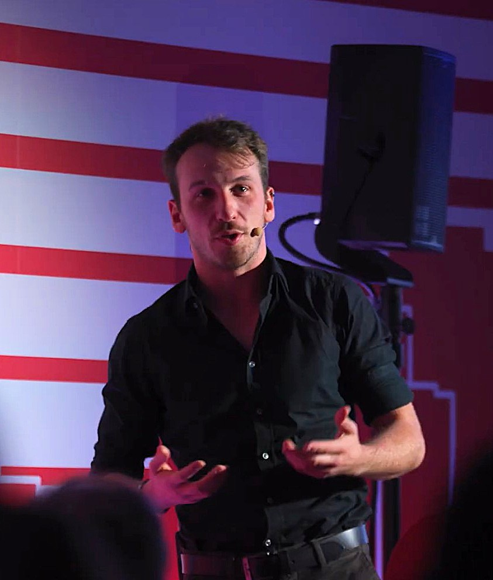

Junior Researcher (RTDa) at Politecnico di Milano. My research focuses on the security of cyber-physical systems and critical infrastructures — from automotive and satellite systems to industrial environments. I work on identifying novel threat scenarios and developing detection methods, including ML-based approaches. I also investigate social engineering and the evolving impact of AI on it.

Vulnerability analysis, intrusion detection on CAN/CAN FD, adversarial robustness of vehicle IDSs, and data-link layer attacks on in-vehicle networks.
Intrusion detection for intra-satellite networks, cyber range simulation for satellite operations, and threat modeling for New Space architectures.
Attack detection and threat modeling for industrial robots, smart water infrastructure, e-vehicle charging systems, railway networks, dams, and critical infrastructure resilience.
AI-driven social engineering, covert communication via LLMs, privacy leakage in federated learning, and the evolving impact of AI on human-targeted attacks.
Novel threat scenarios for emerging CPS, ML-based intrusion detection frameworks, and evaluation of detection robustness against evasion attacks.
The System Security group at NECSTLab, Politecnico di Milano, tackles all aspects of cybersecurity engineering — both offensively and defensively. Our research places a strong emphasis on real systems, with a focus on data-driven and machine learning approaches to build tools and concepts that aid security analysts and end users.
Full list available on Google Scholar.
AI-informed Holistic EVs integration Approaches for Distribution grids.
Satellite Operations Cyber Range Evaluation.
Development of intrusion detection solutions for intra-satellite networks.
Sustainability And Resilience for Infrastructure and Logistics networks.
Key Code based on Nanomaterials to Protect Services and Products.
Made in Italy Circolare e Sostenibile.